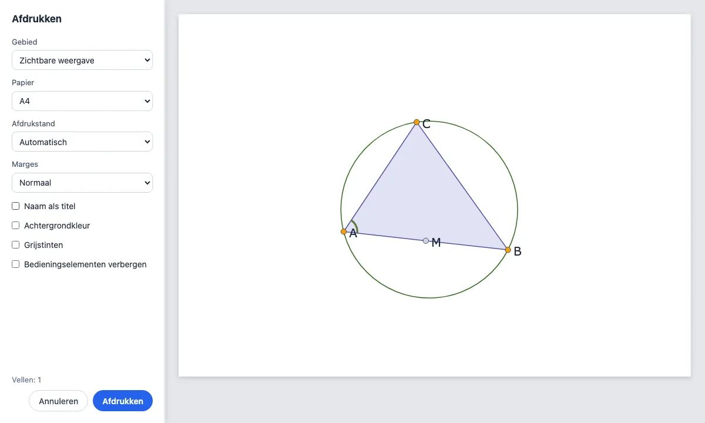
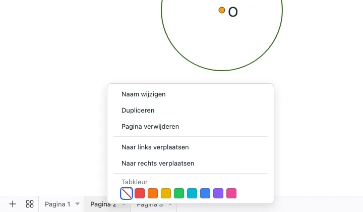

Openen en opslaan
Openen
Openen laadt een bestand:
| Extensie | Herkomst |
|---|---|
.dgo |
DocGeo, eigen formaat |
.dgp |
DGPad, geïmporteerd |
.ggb |
GeoGebra, geïmporteerd |
Je kunt het pictogram van het bestand ook naar de pagina slepen, in de editor en in de speler.
De geopende figuur vervangt de huidige figuur en wist de geschiedenis van ongedaan maken.
Een online figuur opent ook via een link (zie Een figuur delen via een link).
Het menu Bestand biedt ook Openen… (Ctrl O) en Nieuwe figuur, dat met een lege figuur begint.
Recente documenten
Bestand › Recent document openen toont de tien laatst geopende of opgeslagen figuren, de recentste bovenaan: in Chrome en Edge de bestanden van de computer, in alle browsers de figuren die via een link zijn geopend. De browser kan opnieuw toestemming vragen om het bestand te lezen. Een bestand dat intussen is verplaatst, hernoemd of verwijderd, wordt gemeld en uit de lijst gehaald. Lijst wissen maakt haar leeg.
Onvolledige import
Een niet-ondersteund element uit DGPad of GeoGebra wordt samen met zijn afhankelijke objecten genegeerd; de aanwijzing geeft de lijst („Niet geïmporteerd: …”). De details staan in Import uit DGPad en GeoGebra.
Opslaan
, Bestand › Opslaan of
Ctrl S slaat de figuur op als
.dgo. De weergave (zoom, 3D-oriëntatie,
assenstelsel) wordt opgeslagen.
In Chrome en Edge slaat DocGeo op zoals een toepassing: de
eerste keer wordt gevraagd waar het bestand moet komen, daarna
wordt het zonder vragen vervangen. Een .dgo-figuur
die met is geopend of op de pagina is
neergezet, wordt in haar eigen bestand opgeslagen; de browser
vraagt één keer toestemming om het te wijzigen. Een DGPad- of
GeoGebra-figuur wordt nooit overschreven: bij de eerste keer
opslaan ontstaat een .dgo-bestand.
Opslaan als… (Ctrl Shift
S) kiest een ander bestand.
De bestandsnaam staat aan het eind van de menubalk; een rode stip geeft niet-opgeslagen wijzigingen aan. Die verdwijnt bij het opslaan, of door ongedaan te maken tot de opgeslagen toestand. De weergave verschuiven of zoomen telt niet als wijziging.
In andere browsers (Firefox, Safari), of wanneer DocGeo in een
andere pagina is ingebed, downloadt opslaan de figuur onder de
naam van de geopende figuur (figure.dgo voor een
nieuwe figuur).
.dgo is het enige opslagformaat: een figuur uit
DGPad of GeoGebra openen en opslaan zet ze om.
Een niet-opgeslagen figuur herstellen
Zolang een figuur niet-opgeslagen wijzigingen heeft, bewaart DocGeo er een kopie van in de browser. Sluit de editor voordat ze is opgeslagen (venster per ongeluk gesloten, crash), dan verschijnt ze, met datum, onder Niet-opgeslagen figuren bovenaan Bestand › Recent document openen: gekozen komt ze terug, nog steeds gemarkeerd als niet opgeslagen. Deze kopieën worden veertien dagen bewaard, hoogstens tien; Lijst wissen wist ze ook.
Deze kopie blijft in de browser van deze computer: ze vervangt het opslaan niet. Er wordt niets bewaard wanneer DocGeo in een andere pagina is ingesloten.
Afdrukken
Bestand › Afdrukken… (Ctrl P) toont het voorbeeld van de vellen naast hun instellingen. Afdrukken opent daarna het afdrukvenster van de browser, dat ook als pdf kan opslaan.

De figuur vult het vel tot aan de marges: lijnen en krommen lopen tot de rand. In het begin wordt ze nooit vergroot: lijnen en labels houden hun grootte op het scherm.
- Slepen op een vel verschuift de figuur, het muiswiel zoomt in of uit. De weergave van de editor verandert niet.
- Gebied: Zichtbare weergave centreert het vel op wat het scherm toont, zonder het deel dat het gereedschapspalet of de eigenschappen verbergen; Alleen de figuur centreert het op de getekende objecten.
- Papier, Afdrukstand (Automatisch: volgens het gebied) en Marges. Wie deze instellingen, het gebied of de titel verandert, kadert de vellen opnieuw.
- Naam als titel schrijft de naam van de figuur, of van de pagina, boven aan het vel; Achtergrondkleur drukt de achtergrond van de figuur af; Grijstinten verwijdert de kleuren; Bedieningselementen verbergen verwijdert schuifregelaars, selectievakjes, invoervelden, keuzelijsten en knoppen.
- In een werkmap drukt Alle tabbladen één vel per tabblad af.
Esc of Annuleren sluit het voorbeeld. De instellingen blijven behouden tot de editor wordt gesloten.
Werkmappen: meerdere tabbladen
Een werkmap bundelt meerdere figuren, elk in een eigen tabblad,
in één .dgo-bestand. De tabbladen, onder de figuur,
tonen er één tegelijk.

- Bestand › Nieuw tabblad voegt een leeg tabblad toe na de andere, „Figuur 2”, „Figuur 3”… genoemd: de huidige figuur wordt „Figuur 1”. Daarna doet de knop + aan het begin van de tabbladen hetzelfde, en de knop ernaast toont alle tabbladen.
- Bestand › Openen in nieuw tabblad… voegt opgeslagen figuren toe, elk in een tabblad met hun naam (een werkmap brengt al haar tabbladen mee). Bestand › Tabblad opslaan als… slaat de figuur van het getoonde tabblad apart op.
- Een rechterklik op een tabblad, of op zijn pijl ▾, opent zijn menu: Naam wijzigen, Dupliceren, Tabblad verwijderen, Naar links verplaatsen of Naar rechts verplaatsen, en de Tabbladkleur.
- Dubbelklikken op een tabblad wijzigt zijn naam (Enter bevestigt, Esc annuleert); twee tabbladen kunnen niet dezelfde naam hebben. Een versleept tabblad verandert van plaats.
- De tabbladen zijn onafhankelijk: elk tabblad heeft zijn objecten, zijn assen, zijn macro’s en zijn geschiedenis voor ongedaan maken, die je terugvindt als je terugkeert. Een formule kan wel een waarde van een ander tabblad lezen (Een ander tabblad lezen). De globalen van de programma’s zijn daarentegen gemeenschappelijk voor de hele werkmap (Blokken en schildpad).
- Opslaan schrijft de hele werkmap, elk tabblad zoals je het achterliet; het getoonde tabblad is het tabblad dat opent. Een werkmap met nog maar één tabblad wordt weer een gewone figuur.
De speler toont de tabbladen ook. Een figuur die in een webpagina is ingebed, toont alleen het tabblad dat bij het opslaan werd getoond.
Een figuur delen via een link
Een online geplaatste figuur opent via een link: het adres van
de editor, gevolgd door ?url= en de link van het
bestand, ongewijzigd geplakt.
https://doctools.org/apps/docgeo/editor.html?url=https://www.dropbox.com/scl/fi/…/thales.dgo?rlkey=…&dl=0De link van het bestand kan komen van:
| Dienst | Te kopiëren link |
|---|---|
| Google Drive | deellink, toegang ‘Iedereen met de link’ |
| Dropbox | deellink |
| OneDrive |
deellink van een persoonlijk account
(https://1drv.ms/u/c/…)
|
| Nextcloud | openbare deellink, zonder wachtwoord |
| Website |
adres van het bestand (.dgo,
.dgp of .ggb)
|
Het formaat wordt herkend aan de inhoud van het bestand, en de
naam staat aan het eind van de menubalk. Het online bestand
wordt nooit gewijzigd: opslaan maakt een
.dgo-bestand op de computer.
?url= staat als laatste in het adres: alles erna
hoort bij de link (editor.html?lang=en&url=…).
Een figuur in een webpagina insluiten
Een online gepubliceerde figuur kan ook, manipuleerbaar, in een webpagina verschijnen: zie In een webpagina insluiten.
Taal
DocGeo neemt de taal van de browser over;
?lang= legt een taal op (ar,
de, el, en,
es, fr, hi,
it, nl, pt,
zh, zh-TW). De taal bepaalt ook de
namen van de opdrachten (Midden,
Mittelpunkt…); de Engelse namen worden in
alle talen begrepen.